第一回 Re: magic
おかげさまで第一回 Re: magic は、大好評のうちに無事終了いたしました。
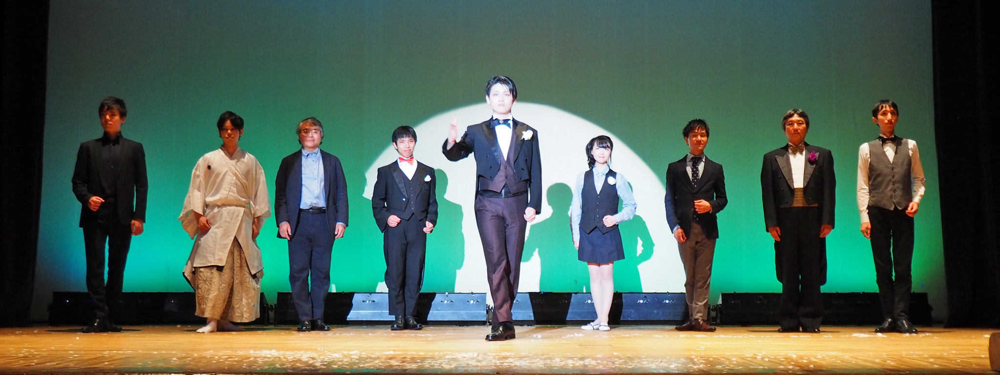東京大学奇術愛好会有志発表会
マジックサークルは引退したけど、マジックは続けたい...
そんなマジック好きが文字通り「もう一度マジックを！」と結集してできたのが、Re: magic です。
東京大学奇術愛好会 OBOG による世代を超えたマジックショー。
歳は取ったけど、エネルギーとマジック愛だけは若いもんに負けませんよ！！
マジックなしでは生きていけないわたしたちの生き様をとくとご覧あれ (^_^)
マジック好きな人も、まだ見たことない人も、きっと来てくださいネ！
|
|
２０１６年１０月１０日 開場 １８：００～ 開演 １８：３０～ 入場料無料 完全自由席 会場： 西東京市民会館 西東京市田無町四丁目15番11号 http://www.city.nishitokyo.lg.jp/smph/sisetu/hall/simin.html |
|
|
|
小倉 宏之 加藤 雄大 川口 公尚 木村 浩明 五味 悠介 野々村 史城 前嶋 宏志 山崎 茜 若林 良介 |
|
当発表会は、「OBになってもまだまだ手品を続けたい！」という熱い思いを持った
東京大学奇術愛好会OB達有志による発表会となっております。
出演者紹介
|
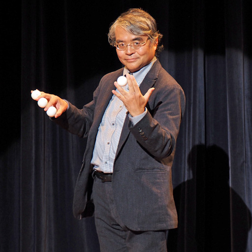
小倉 宏之 ダテに歳は取っていない、マジック歴 47 年。でも、まだ還暦は過ぎていません！ |
|
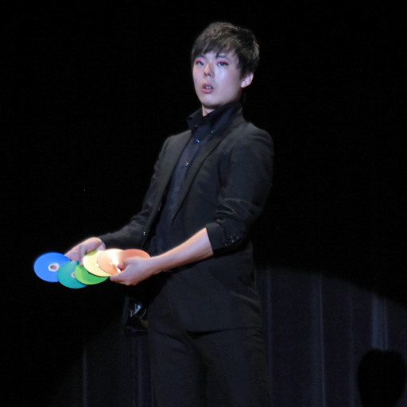
加藤 雄大 関東大学奇術連盟 2014 年 春の連盟発表会出演 |
|
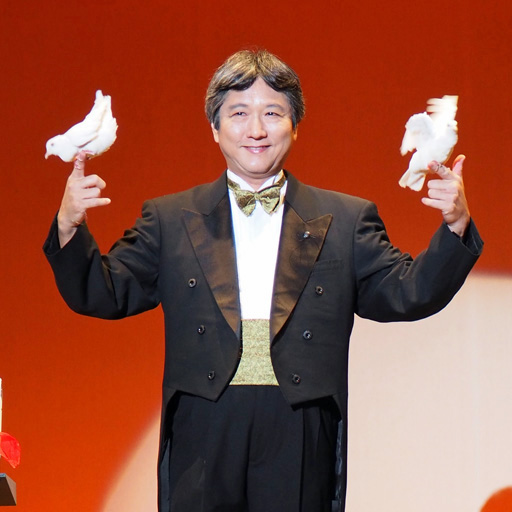
川口 公尚 ダテに歳は取っていない、マジック歴 47 年。でも、まだ還暦は過ぎていません :) |
|
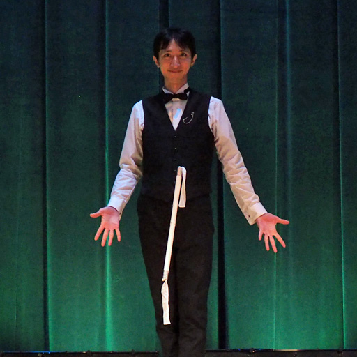
木村 浩明 第 8 回関東ステージマジックサークル発表会 (2016) 出演 |
|
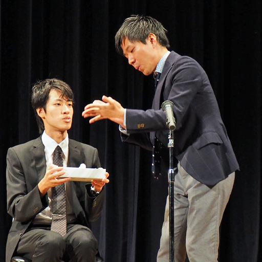
五味 悠介 |
|
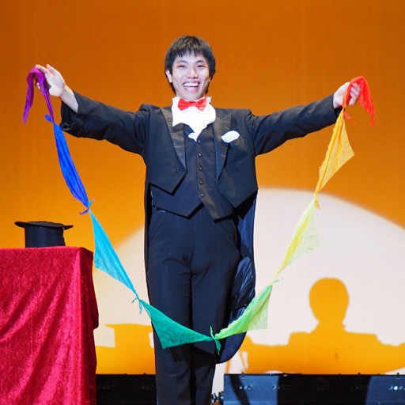
野々村 史城 |
|
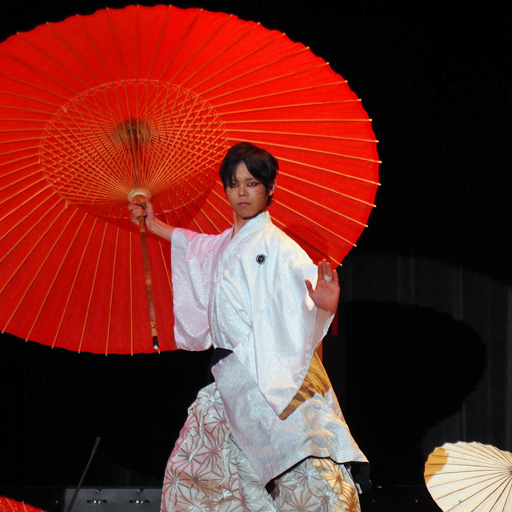
前嶋 宏志 第 8 回学生マジック選手権 (2016) 準優勝、第 58 回テンヨーマジックフェスティバル (2016) 出演 |
|
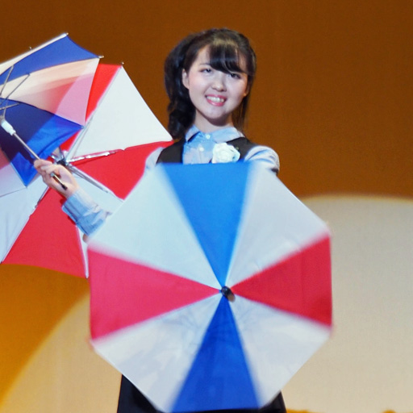
山崎 茜 |
|
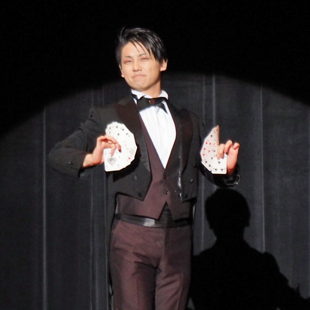
若林 良介 第 4 回関東ステージマジックサークル発表会 (2012) 出演、第 8 回マジックポットコンベンション (2013) チャレンジャー、マジックファンミーティング 2013 (2013 @八王子) チャレンジャー、第 8 回関東ステージマジックサークル発表会 (2016) 出演 |
|
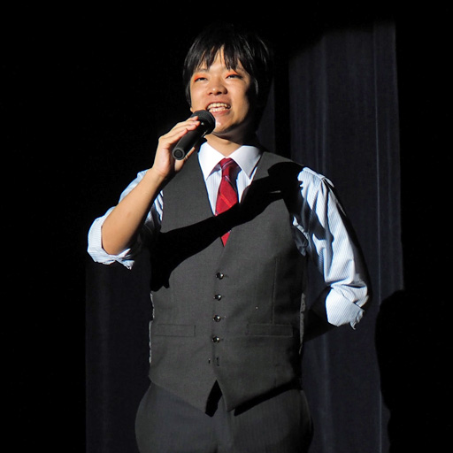
宮崎 大樹 |
お越しいただいた皆様、本当にありがとうございました。